Project 2 — Fun with Frequencies & Multiresolution Blending
CS 280A — Computer Vision & Computational Photography
1.1 — Finite Difference Operator
Implementation — 4-loop Convolution
def convolution_4loops(
img: np.ndarray,
K: np.ndarray, #kernel
use_padding: bool = True,
flip: bool = True, #flip kernel for conv
) -> np.ndarray:
"""
2D conv using 4 loops:
- If `use_padding`: zero-pad by (kH//2, kW//2) to return same-size output.
- If `flip`: flip kernel for convolution; otherwise computes correlation.
- Returns array with shape (H, W).
"""
H, W = img.shape
kH, kW = K.shape
if use_padding:
pad_h, pad_w = kH // 2, kW // 2
img = pad_zero(img, pad_h, pad_w)
out = np.zeros((H, W), dtype=img.dtype)
if flip:
K = np.flip(K, axis=(0, 1))
for out_row in range(H):
for out_col in range(W):
for kernel_row in range(kH):
for kernel_col in range(kW):
out[out_row, out_col] += img[out_row + kernel_row, out_col + kernel_col] * K[kernel_row, kernel_col]
return outImplementation — 2-loop Convolution
def convolution_2loops(
img: np.ndarray,
K: np.ndarray, #kernel
use_padding: bool = True,
flip: bool = True, #flip kernel for conv
) -> np.ndarray:
"""
2D conv using 2 loops:
- If `use_padding`: zero-pad by (kH//2, kW//2) to return same-size output.
- If `flip`: flip kernel for convolution; otherwise computes correlation.
- Returns array with shape (H, W).
"""
H, W = img.shape
kH, kW = K.shape
if use_padding:
pad_h, pad_w = kH // 2, kW // 2
img = pad_zero(img, pad_h, pad_w)
out = np.zeros((H, W), dtype=img.dtype)
if flip:
K = np.flip(K, axis=(0, 1))
for out_row in range(H):
for out_col in range(W):
out[out_row, out_col] = np.sum(img[out_row:out_row + kH, out_col:out_col + kW] * K)
return out
Timing summary.
My 4-loop convolution takes about 50 seconds, with my 2-loop convolution taking 4 seconds and the scipy convolve2d taking .231 seconds. Here it is clear that each of these versions is an order of magnitude faster than the last. I found it interesting how much faster scipy's convolve is, likely due to being heavily optimized code.
My 4-loop convolution takes about 50 seconds, with my 2-loop convolution taking 4 seconds and the scipy convolve2d taking .231 seconds. Here it is clear that each of these versions is an order of magnitude faster than the last. I found it interesting how much faster scipy's convolve is, likely due to being heavily optimized code.
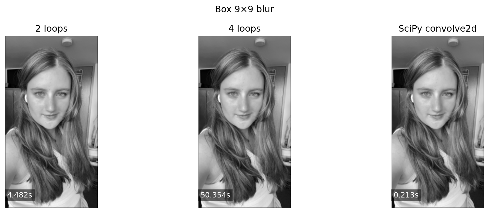
Both my implementations and scipy convolve2d have Box blur near borders getting darker (averaging in zeros with the padding). Overall these techniques all produce the same effect. Scipy's convolve2d has different options for padding, such as 'fill' (default): Similar to zero-padding, 'wrap': opposite edges connect, 'symm': Reflects pixels across boundaries, and 'constant': Uses a set constant value. I used 'fill' for this project to mimic zero-padding.
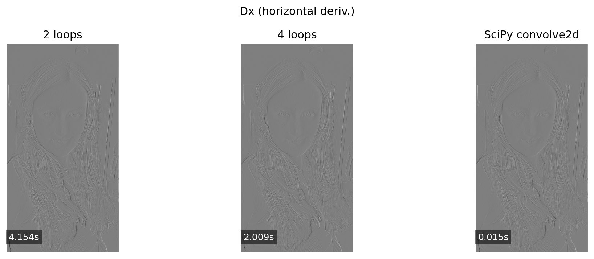
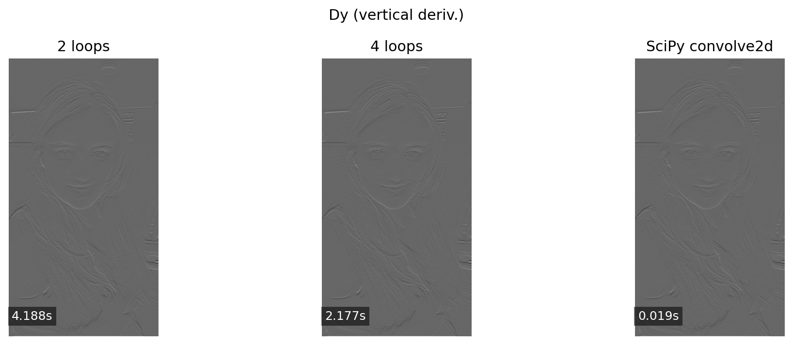
Here we see the finite difference operators (Dy/Dx) successfully highlight horizontal/vertical edges, respectively.
We can also see that derivatives (Dx/Dy) at the very edge tend to show large responses because the outside is 0. This is expected for zero-padding, but in practice we might want to use a different padding strategy (e.g., reflect) to avoid this artifact.
1.2 — Derivative of Gaussian (DoG)
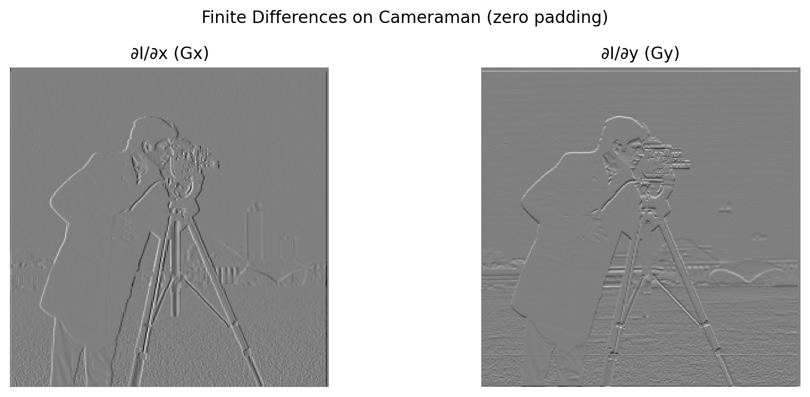
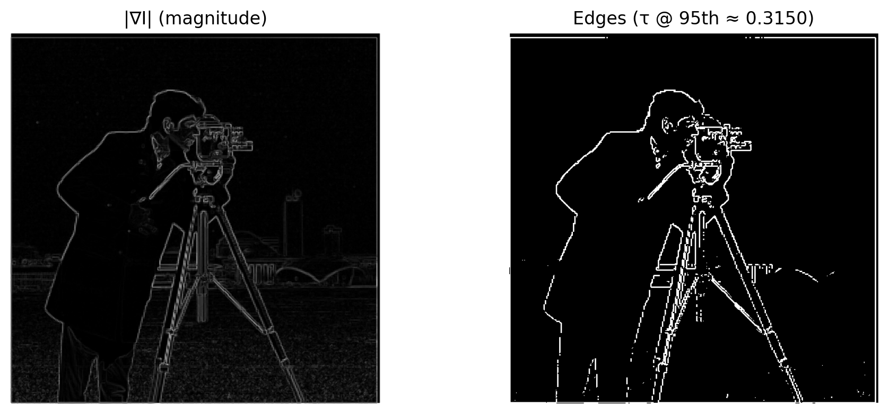
Comments: Compare plain differences vs DoG; discuss σ and noise suppression.
1.3 — Image Sharpening
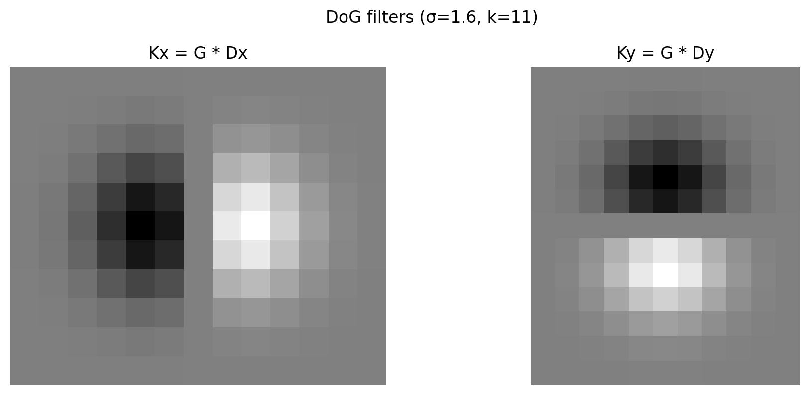
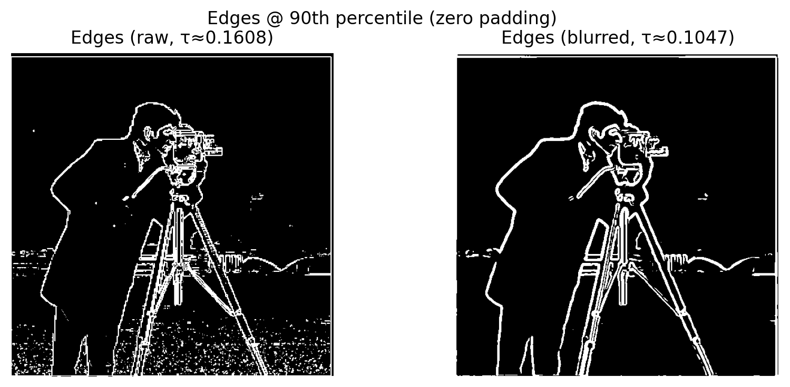
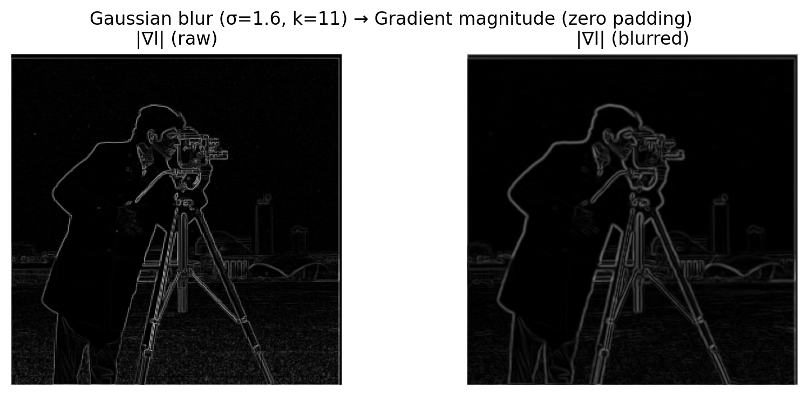

Comments: Unsharp mask (or equivalent), σ/amount, artifacts/benefits.
2.1 — Hybrid Images
Each row: Source A, Source B, then the Hybrid (A high-freq + B low-freq).
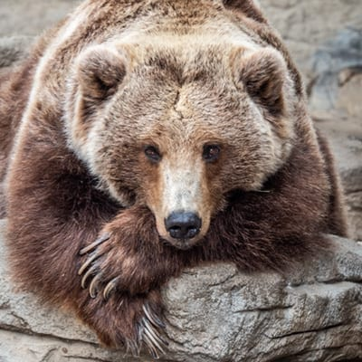
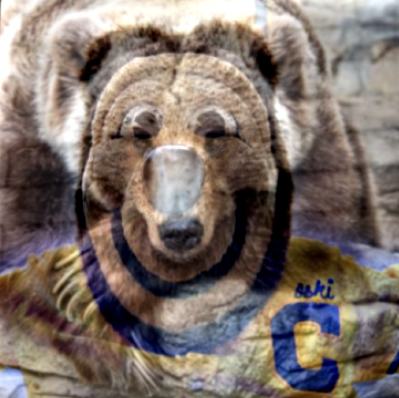
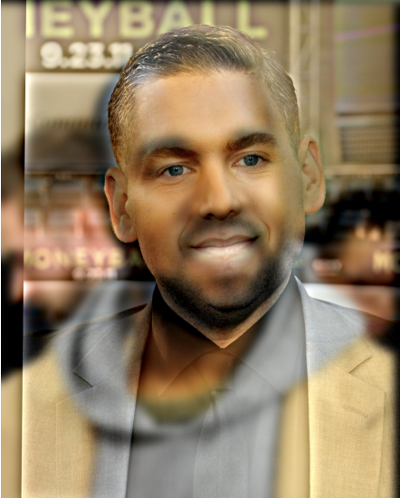


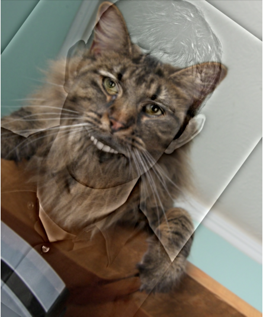
Comments: σ choices, alignment, and where color helped (low vs high).
2.2 — Frequency Analysis
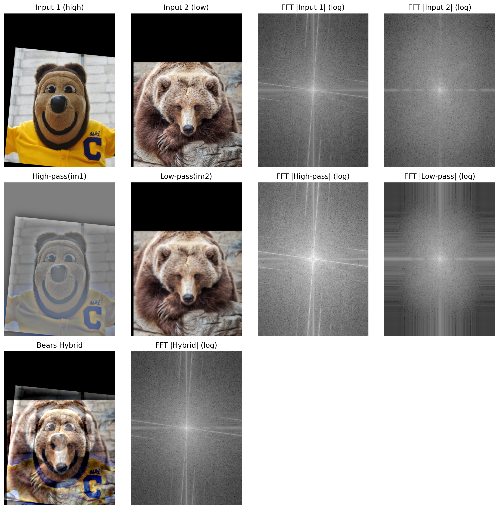
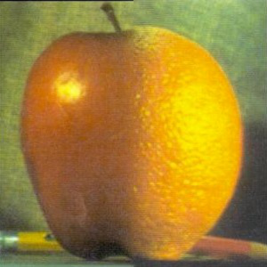
Comments: What the spectra show at different scales.
2.3 — Multiresolution Blending (Gaussian/Laplacian Stacks)
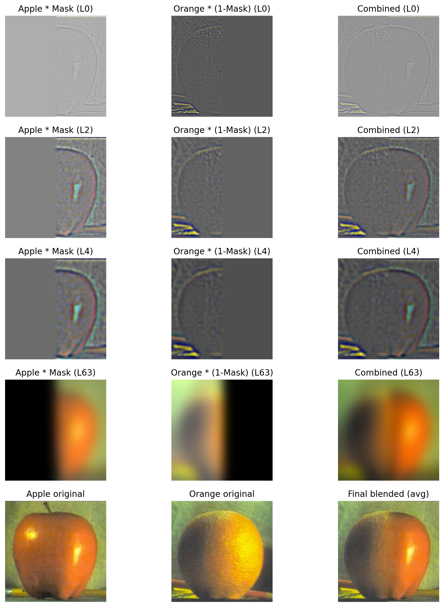
Comments: Which levels carry edges vs shading; how the Gaussian mask stack affects seams.
2.4 — Creative Blends (Masks + Results)
Each row shows: Original A, Original B, Mask, Final Blend.
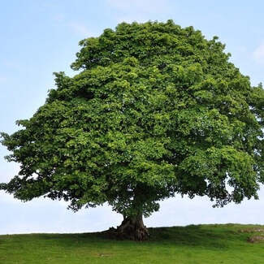
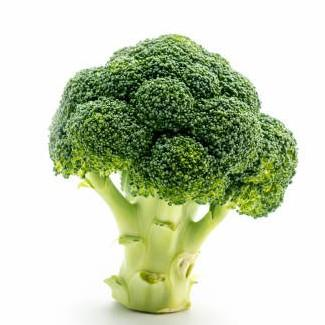

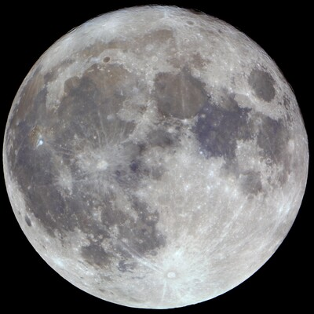
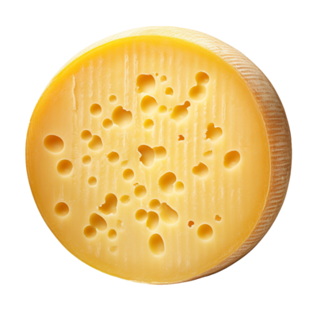
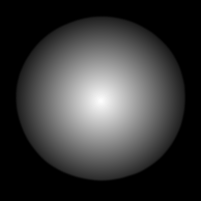
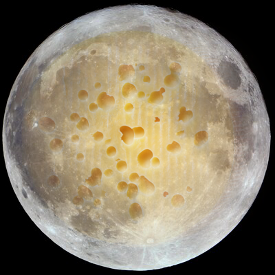


Comments: Mask design and feathering; where seams disappear; any artifacts.
Appendix — Misc
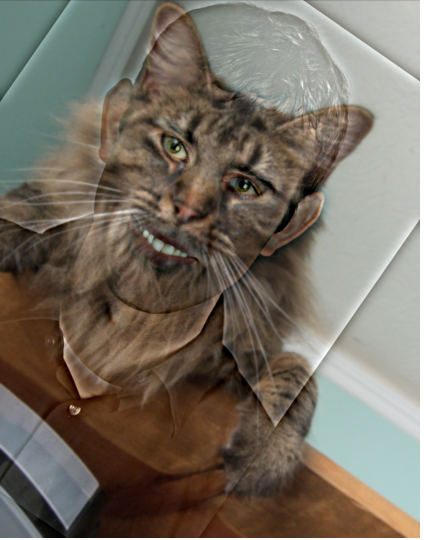